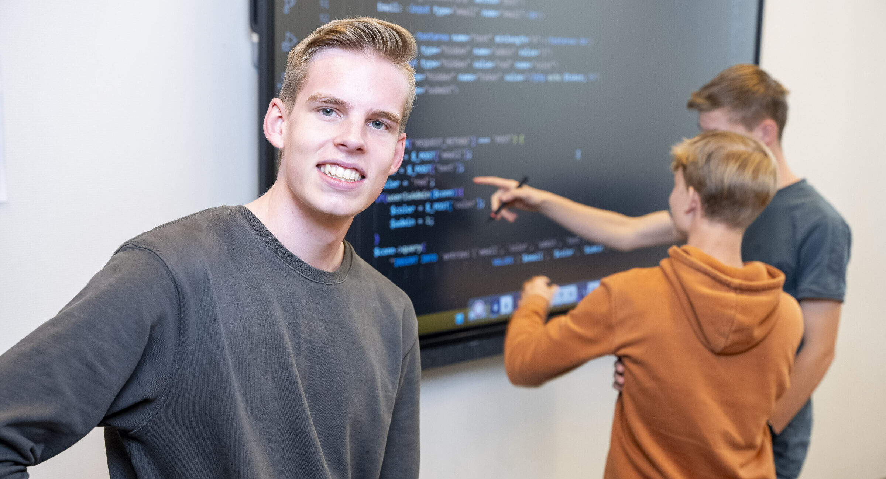

Ontdek de sfeer op het Hoornbeeck College door middel van deze foto's. Een blik achter de schermen van het dagelijks leven, lessen en evenementen.
Foto's van het College

Leslokaal tijdens een ICT-praktijklesStudenten pauzeren in de kantinePraktijk met netwerkapparatuurWerken aan een groepsprojectEvenement op het collegeHet Hoornbeeck College van buiten